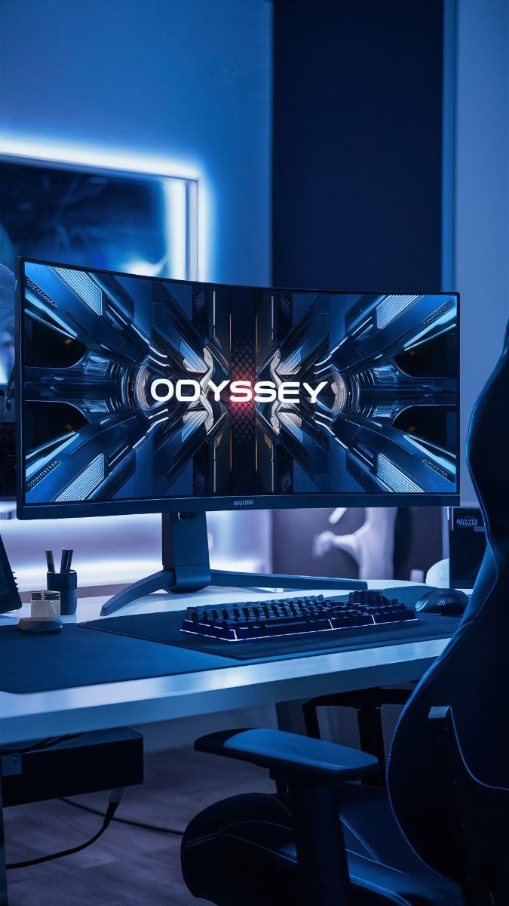

Mouse
Dispositivo de entrada essencial para navegar e interagir com seu PC.

Mouse Pad
Superfície que melhora a precisão e o conforto do uso do mouse.

Monitor
Tela onde você visualiza as informações e imagens do computador.

Teclado
Dispositivo de entrada usado para digitar e interagir com o sistema.

Headset
Combinação de fones e microfone para comunicação e imersão sonora.